| 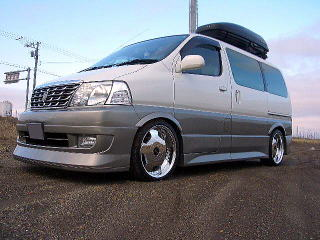 | 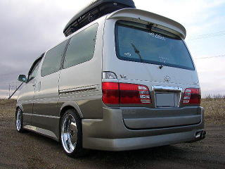 |
| ワークユーロラインＤＨのメッキを装着しました。１９インチです。 | 去年まで同じアルミを付けていましたが、今度はメッキにしてみました。 |
| 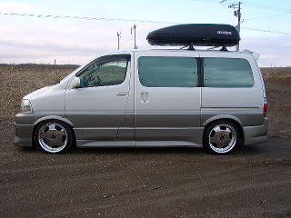 | 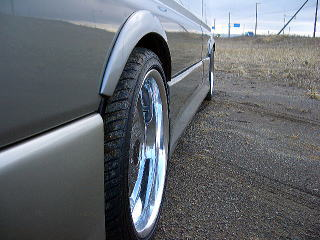 |
| タイヤを２３５／３５−１９から２４５／３５−１９に変更しました。少しホイルが小さく見えます。 | 良く見えませんが、リム幅リアが８９ミリ、フロント７６ミリです。 |
| 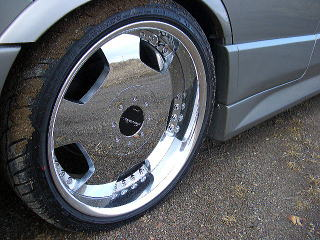 | 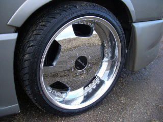 |
| フロントです。 | リアです。 |
| 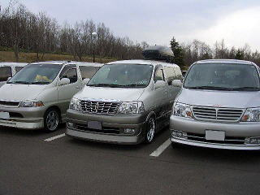 | 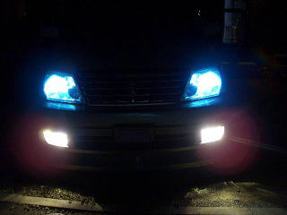 |
| ミーティングのひとこまです。 | サンヨーテクニカのHIDで６０００Kのものです。 |
| 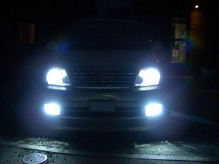 | 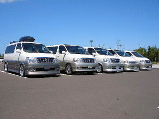 |
| フォグにHIDの８０００Kを入れてみました。 | 2006/8 ミーティングのひとこまです。 |
| 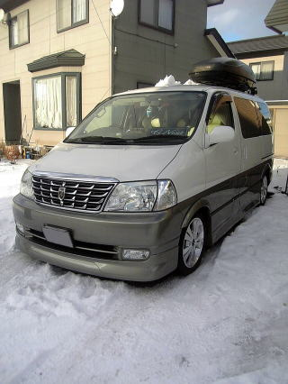 | 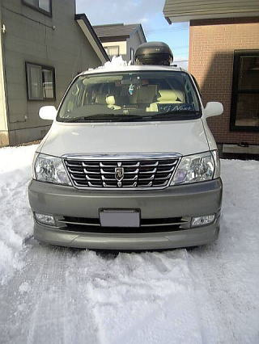 |
| 雪が降りました。冬はフロントをＪＰのＦＵＬＬ ＢＬＯＯＭにしています。あまり低くないのと、ＦＲＰでないのでそんなに気を使わなくてすみます。 | リアは破壊しそうなので、外しています。 |
| 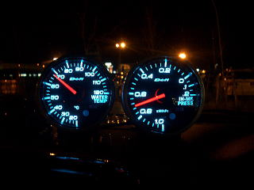 | 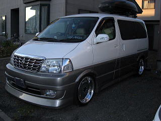 |
| 新しく出たｄｅｆｉのブルータイプを装着しました。左が水温計、右がインマニプレス計です。 水温は４０度以下での全開走行はよくないそうです。なんとなくかっこよかったので付けました。電子式ははじめてです。 |
ミトスエグゼマーカーのドアミラーウィンカーを装着しました。Ｖｅｒ１の３連LEDのものです。高輝度LEDを採用しムラのない明るい光です。 |
| 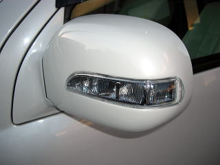 | 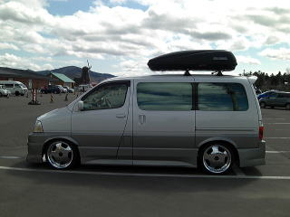 |
| 塗装と装着は難易度が高いのでプロに任せました。 | 上湧別のチューリップ園での写真です。 |
| 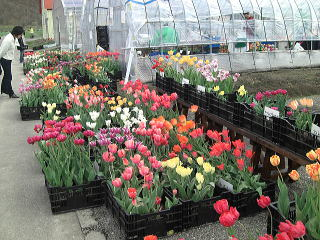 | |
| リアウィンドウ | |
| 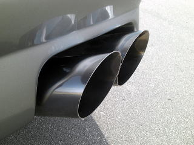 | 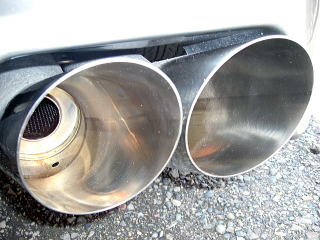 |
| マフラーを磨きました。 | |
| 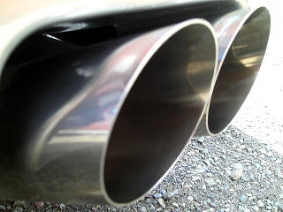 | 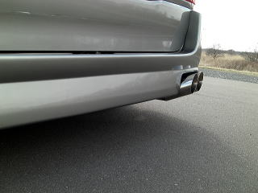 |
| 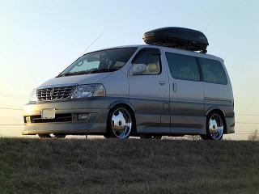 | |
| ツヤエキスパート施工＆ナンカンタイヤ装着画像。 | |
| 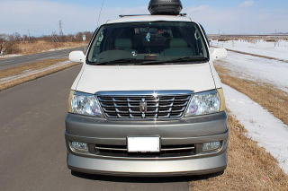 | 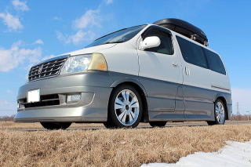 |
| 2013/03/23 最後のドライブに行きました。 次週には新車購入の下取りになります。 |
|
| 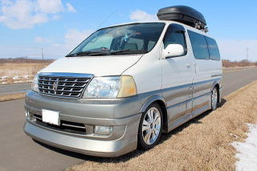 | 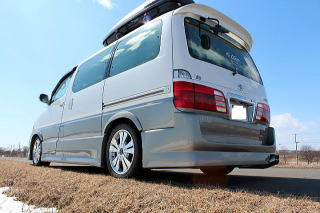 |
| 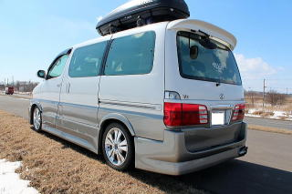 | 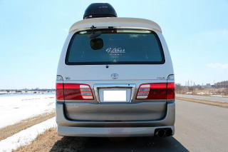 |
| これでグランドハイエースの更新は終了です。 |